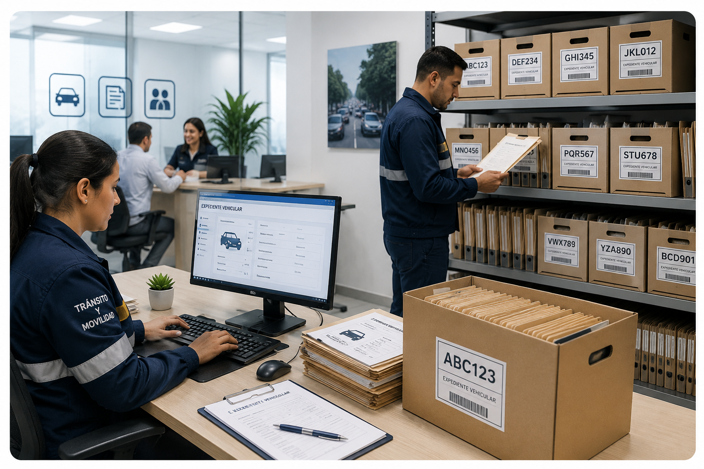

Inicio
Bienvenido al Sistema de Gestión Documental
Administre la comunicación institucional, el control de préstamos y el inventario documental de manera centralizada. Consulte expedientes, realice seguimientos y mantenga organizada la información vehicular del Departamento de Tránsito y Movilidad.
✓ Gestión documental
✓ Control de préstamos
✓ Comunicación institucional
